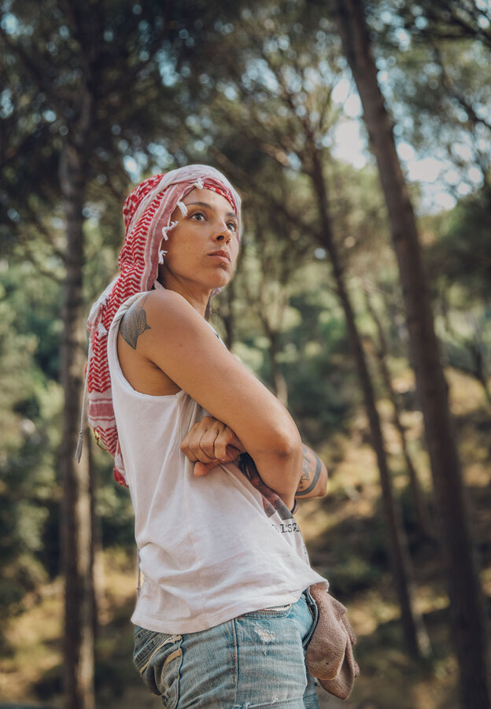
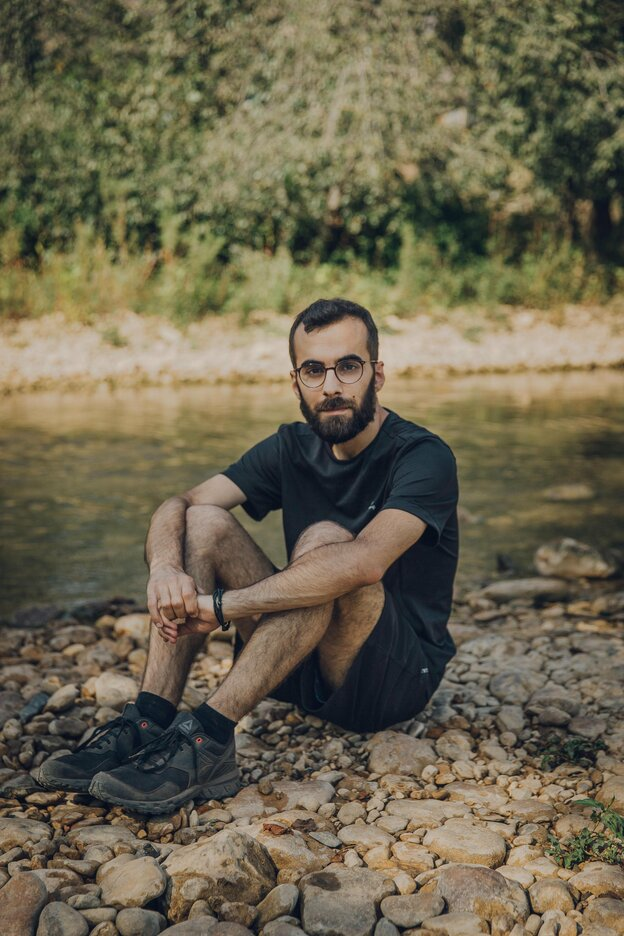
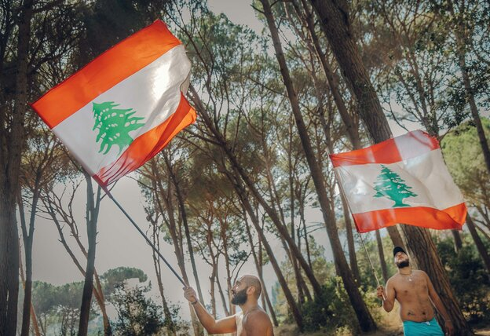

Spielende Kinder im Fluss des Bisri-Tals im Libanon Foto: Maria Klenner
Staudamm im Libanon:Wasser in Beton
Die Aktivist*innen im Bisri-Tal haben ihr Ziel erreicht – warum aber hat die Weltbank das Staudamm-Projekt im Libanon gestoppt?
9.10.2020, 15:55 UHR
Leila al-Ali nimmt die libanesische Flagge, grüner Zedernbaum auf weißem Grund, gerahmt von zwei roten Streifen, und schwingt sie über ihrem Kopf. Um sie herum klatschen und tanzen Freunde, recken die Arme in die Höhe. Die Kronen der Pinienbäume spannen sich wie Schirme auf, zwei Männer machen ein Lagerfeuer. Zwischen Campingzelten feiern sie ihren Erfolg: die Entscheidung der Weltbank, den Bau des Staudamms zu stoppen.
35 Kilometer südlich von Beirut fließen mehrere Quellbäche zu einem Fluss zusammen, der sich durch das sogenannte Bisri-Tal schlängelt, unterhalb von Bergen, vorbei an Zypressen, Eichenbäumen, Obstgärten und Ackerland, bis sich sein Wasser ins Mittelmeer ergießt. Weil es so dem Libanon zur Versorgung verloren geht, sollte es durch eine 73 Meter hohe Staumauer gestoppt werden. Ein großes Becken sollte jährlich 125 Millionen Kubikmeter an Wasser sammeln – so viel, dass es für 1,6 Millionen Menschen reicht. Zum Vergleich: Der größte Stausee in Deutschland, der Bleiloch-Stausee in Thüringen, fasst etwas mehr als 200 Millionen Kubikmeter.
Doch aus dem Plan für den Bisri-Damm wird nichts, denn die Geldgeberin, die Weltbank, hat das Projekt erst im September gestoppt. 474 Millionen US-Dollar wollte sie der libanesischen Regierung für das Projekt leihen, die noch ausstehenden 244 Millionen Dollar hat sie gestrichen. Mit diesem Geld wurden das Projektmanagement bezahlt, die Beratung und Gutachten zum Umweltschutz sowie 861 Landbesitzer*innen ihr Land abgekauft. Die Entscheidung der Weltbank kommt also reichlich spät, sie hatte den Damm 2014 als Förderprojekt angenommen. Wieso hat die Bank ihren Kurs geändert?
Roland Nassour ist etwas müde an diesem Sonntagmorgen Anfang September. Am Abend zuvor hat er bis spät in die Nacht Interviews gegeben, am Morgen war er bereits in einer Liveschalte. Er steht zwischen den Bäumen auf einem natürlichen Plateau, unter dem sich der Bisri-Fluss entlangzieht. Nassour beobachtet, wie Aktivist*innen Müll aufsammeln und ein Lagerfeuer machen. Der 28-Jährige koordiniert die Kampagne „Rettet das Bisri-Tal“. Seit drei Jahren hat er sich dem Ziel verschrieben, den Dammbau zu stoppen – und dafür sein Studium hintenangestellt.
Mit der Coronapandemie wurde klar, wie wichtig Händewaschen ist. Vor allem im Globalen Süden ist das oft unmöglich: weil es zu wenig oder kein sauberes Wasser gibt. Besonders Frauen müssen jeden Liter über weite Strecken nach Hause tragen und sich dicht gedrängt in Schlangen für Wasser anstellen. Der Zugang zu Wasser wird mit der Klimakrise verschärft. Immer öfter wird Wasser privatisiert oder steht im Konflikt mit Großprojekten, die Fortschritt bringen sollen.
Das war für uns Grund zu sagen: taz folgt dem Wasser. Gefördert durch das European Journalism Centre (EJC) mit Unterstützung der Bill and Melinda Gates Foundation recherchieren fünf taz-Korrespondentinnen in Lateinamerika, Westasien, Südasien und in Afrika entlang des Nils. Mehr unter taz.de/Wasser
„Es kommt wirklich selten vor, dass die Weltbank einen Kredit dauerhaft einstellt, wie sie es heute getan hat“, sagt er und klingt dabei, als könne er es selbst noch nicht glauben. „Weil sie von dieser Art von Projekt profitiert“, schiebt er hinterher. „Selbst als das Projekt verzögert wurde, erhielt die Weltbank Geld von der libanesischen Regierung, Verzögerungsstrafen.
Für ihren Kampf gegen den Staudamm hat Leila al-Ali ihr altes Leben als Psychologin aufgegeben Foto: Maria Klenner
Sie kümmert sich also nicht wirklich um das Tempo des Projekts. Was die Weltbank wirklich interessiert, ist ihr Image. Deshalb glauben wir, dass die Kampagne ‚Rettet das Bisri-Tal‘ und ihre Aktionen zu dieser Entscheidung gedrängt haben.“
Nassour ist gegen den Damm, weil er vieles zerstört hätte: Rund 600 Hektar an Landfläche, knapp 150.000 Bäume wie Eichen und Pinien, historische Stätten wie Brücken und Gräber aus der Bronzezeit. Dort, wo fünf Säulen eines Tempels von der römischen Zeit zeugen, wäre der Grund des Stausees entstanden. Außerdem hätte die Mar-Musa-Kirche weichen müssen, ein drei Jahrhunderte altes Steingebäude, in das Dorfbewohner*innen zum Beten kommen. Die Weltbank hatte angeboten, die Kirche zu versetzen, doch viele im Dorf bezweifelten das. Sie fürchteten nicht nur um das Gotteshaus, sondern auch um ihr Leben.
Denn 1956 forderte ein Erdbeben in der Region 135 Menschenleben. Der leitende Ingenieur sagte, der Damm könne Erdbeben bis zur Stärke 8 auf der Richterskala abfedern; der libanesische Rat für Entwicklung und Wiederaufbau, die Regierungsbehörde, die Infrastrukturprojekte beaufsichtigt, befand das Tal als erstklassigen Standort für einen Staudamm.
Die Aktivist*innen waren jedoch nicht überzeugt. Die 39-jährige Leila al-Ali, ihre sechsjährige Tochter Nirwana und ihre 34-jährige Freundin Sarah übernachten seit mehr als drei Monaten in einem roten Zelt im Bisri-Tal. Sie waschen ihre Kleidung regelmäßig im Fluss, kochen auf einem Campingkocher. 20, an Wochenenden sogar 50 Menschen zelten zwischen den Pinienbäumen, schätzen sie. „Ich gehe für zwei, drei Tage in der Woche nach Hause“, erzählt al-Ali, die als Psychologin und Lebensberaterin arbeitet. „Ich habe mein Leben, meine Klinik, alles verlassen – hierfür“, sagt sie.
„Es ist mein Land, es ist mein Zuhause, der ganze Libanon ist mein Zuhause. Zuhause ist kein Gebäude, kein Haus. Es ist ein Land, wo du hingehörst. Ich gehöre hierher.“ Die Aktivist*innen haben Krebse gesammelt, die in einem Plastikbehälter Bläschen ins Wasser blubbern, und kleine Vögel gefangen, die sie auf Spießen grillen. „Jeden Morgen machen wir sauber, trinken Kaffee. Wir gehen an den Fluss, schwimmen ein bisschen. Wir essen zu Abend und verbringen gemeinsam Zeit“, sagt al-Ali.
Was klingt wie ein Sommercamp, ist eine Protestaktion. Vor knapp einem Jahr, am 17. Oktober, gingen Tausende Menschen im Libanon auf die Straßen. Sie protestierten gegen ihre Politiker, denen sie Korruption und Misswirtschaft vorwerfen. Die Aktivist*innen im Bisri-Tal sehen sich als Teil dieser Bewegung, der Revolutionäre.
Sie bezweifeln, dass der Kredit der Weltbank je zurückgezahlt werden kann. Denn der Zentralbank sind die Dollarreserven ausgegangen, woraufhin die lokale Währung auf dem Schwarzmarkt um 80 Prozent ihres Wertes eingebüßt hat. Der libanesische Staat ist bankrott, die Schuldenlast des Landes liegt bei rund 77 Milliarden Euro – knapp 170 Prozent des Bruttoinlandsproduktes. Tausende Menschen haben aufgrund der Wirtschaftskrise ihre Jobs verloren. So auch die Kosmetikerin Sarah, die ihren Nachnamen nicht nennen möchte.
Das Projekt präsentiert die schamlose Wasserpolitik
„Hier geht es nicht nur um den Damm“, sagt sie. „Wir werden jeden öffentlichen Platz bevölkern. Wir kämpfen für das Land.“ Sie möchte, dass die Artenvielfalt erhalten bleibt. „Wieso benutzen wir nicht einfach Brunnenanlagen?“ Ihre Freundin Leila al-Ali fügt hinzu: „Wir sind nicht dumm. Wir wissen, dass wir Wasser haben, aber sie halten es von uns fern. Warum? Um Geld zu verdienen. Repariert erst die vorhandenen Dämme! Wir haben viele, viele Dämme, warum wollen sie einen neuen bauen?“
Der 28-jährige Roland Nassour koordiniert die Kampagne „Rettet das Bisri-Tal“ Foto: Maria Klenner
„Das Bisri-Staudammprojekt repräsentiert alles, wogegen wir als Libanesen kämpfen“, erklärt Kampagnenkoordinator Nassour. „Es repräsentiert die Vetternwirtschaft im Libanon, Korruption und Klientelismus. Es repräsentiert die Finanz- und Wirtschaftspolitik, die nach ausländischen Krediten trachtet, ungeachtet des tatsächlichen Nutzens des Projekts. Es repräsentiert auch die schamlose Wasserpolitik, die seit den 40er Jahren besteht.
Eine Wasserpolitik, die auf die Gewinne für die Bauindustrie durch ein großes Infrastrukturprojekt abzielt, anstatt wirklich nach nachhaltigen Lösungen zu suchen, die die lokalen Gemeinschaften und die Umwelt respektieren. Dieselbe Firma, die den Auftrag zur Umweltverträglichkeitsprüfung bekam, hat auch den Auftrag zur Bauüberwachung erhalten.
Dass die Libanes*innen es nicht gutheißen, dass ihre Regierung einen Millionenkredit für den umstrittenen Damm bekommt, ist auch bis nach Berlin durchgedrungen. Uwe Kekeritz, Mitglied im Bundestag und Sprecher für Entwicklungspolitik der Grünen, ist durch libanesische Organisationen auf den Bisri-Staudamm aufmerksam geworden. Durch gezieltes Nachfragen hat Kekeritz herausbekommen, dass auch die Bundesregierung den Damm für unterstützenswert hielt. Zwar ist kein Geld direkt vom Entwicklungsministerium in das Projekt geflossen, Deutschland hält aber einen der höchsten Kapitalanteile an der Weltbank und zahlte im Jahr 2019 mehr als 38 Milliarden US-Dollar ein.
Auf seine Anfrage, ob man angesichts der Finanzkrise die Unterstützung an Entwicklungsprojekten im Libanon überdenke, hieß es von der Bundesregierung: „Angesichts der enormen Entwicklungsherausforderungen im Libanon, unter anderem beim Zugang zu sauberem Trinkwasser (…) sowie der Bedarfe von syrischen Flüchtlingen und deren libanesischen Aufnahmegemeinden, hält die Bundesregierung die Fortführung der laufenden Vorhaben und die Umsetzung der geplanten Vorhaben entwicklungspolitisch für dringend geboten.“
„Das Bisri-Staudammprojekt repräsentiert alles, wogegen wir als Libanesen kämpfen“
Kekeritz sagt, die „Alarmglocken hätten viel früher läuten müssen“. „Ich bin davon überzeugt, dass die Weltbank hervorragende Wissenschaftler hat, die das Risikopotenzial, dass die Gelder in Korruption versinken, kennen mussten“, so der Grünen-Abgeordnete.
„Die Anteilseigner haben hier wohl das Signal gegeben: Investiert dort. Und auch wenn viel Geld eventuell verloren geht, macht das nichts.“ Die Weltbank selbst habe das Ziel, die Wasserversorgung in Beirut zu verbessern. „Aber mit den Vorgaben war das meines Erachtens nicht möglich, und das hätte die Weltbank erkennen müssen.“
Die Weltbank aber sagt, der Stopp des Projekts betreffe auch 460.000 Menschen, die mit weniger als 4 US-Dollar am Tag auskommen müssten – sie hätten nun keine Chancen auf einen zuverlässigen Zugang zu sauberem Wasser. „Die Haushalte werden sich nicht auf das öffentliche Wassernetz verlassen können und werden gezwungen sein, weiterhin auf teure alternative Wasserquellen wie Tankwagen und Flaschenwasser zurückzugreifen. Die Kosten für Wasser aus Tankwagen können in einigen Gebieten bis zu 20 US-Dollar pro Kubikmeter betragen.“
Im Jahr 2015 lag der Wasserverlust durch nicht gewartete Systeme, leckende Rohre und Diebstahl im Libanon bei rund 50 Prozent. „Die Weltbank hat die Alternativen nicht ausreichend geprüft“, sagt der Grünen-Politiker Kekeritz. „Wenn die Leitungen marode sind und Wasser verlieren, dann ist es für mich logisch, dass ich zunächst erst mal dieses Manko behebe und auch versuche, andere Möglichkeiten zu erschließen.“
Vor dem Energie- und Wasserministerium in Beirut steht ein runder Springbrunnen mit leerem Wasserbecken. Im ersten Stock, hinter einem langgezogenen schwarzen Schreibtisch sitzt Khaled Nakhle, Berater im Wasserministerium. „Wer sagt, dass wir die [undichten] Rohre nicht reparieren?“, fragt er. „Seit 10 Jahren reparieren wir die Leitungen, aber selbst wenn wir alle Lecks stopfen würden, hätten wir noch immer einen Engpass.“
In seiner Stimme klingt viel Wut, denn er sieht Dämme als günstige und logische Lösung für Libanons Wassermangel. „Wir müssen die Produktion erhöhen“, sagt er. Dafür möchte er alle Optionen nutzen und weigert sich, „nur von Alternativen“ zu sprechen. „Der einfachste Weg ist es, natürliche Quellen zu nutzen. Und der zweitgünstigste Weg ist der Bau von Dämmen. Wenn das nicht ausreicht, geht man ans Grundwasser.“
Der Report löste eine Kontroverse über Staudämme aus
Gegenwärtig speichert der Libanon nur 6 Prozent seines Wassers in Reservoiren. Viele Menschen sind auf illegal gebohrte Brunnen angewiesen. Die Weltbank schätzt, dass rund 60.000 illegale Bohrlöcher übermäßig genutzt werden und Wasser von zweifelhafter Qualität hervorbringen.
Der Fahrplan des Wasserministeriums aus dem Jahr 2010 sieht vor, 19 Dämme in dem Land zu bauen, das gerade einmal halb so groß ist wie Hessen. 2015 prüfte Ecodit, eine kleine US-amerikanische Firma, die zusammen mit Regierungen nachhaltige Entwicklungsprojekte angeht, diese Wasserstrategie. Alternativ zu den Dämmen schlug Ecodit vor, durch Aufforstung die Grundwasserneubildung anzukurbeln, Regenwasser von Dächern zu gewinnen, Schmutzwasser aufzubereiten und wiederzuverwenden. Außerdem empfahl die Firma, die Konstruktion von damals neun Dämmen zu stoppen und stattdessen auf Unterwasserquellen zu setzen – diese Ausflüsse unter der Wasserlinie, genannt submarine Quellen, könnten zwischen dem salzigen Meerwasser trinkbares Süßwasser liefern.
Dabei veröffentlichte die Welttalsperrenkommission vor 20 Jahren bereits einen Bericht über Staudämme. Die Kommission wurde unter anderem von der Weltbank eingerichtet und sollte untersuchen, was an der Kritik von Dämmen dran ist. Ihr Fazit: Viele Projekte blieben hinter den Erwartungen für die Wasserversorgung und Energiegewinnung zurück, verursachten hohe Kosten und schädigten die Umwelt.Der Report löste eine Kontroverse über Staudämme aus.
2014 untersuchten Forscher*innen der Universität Oxford 245 große Talsperren, die zwischen 1934 und 2007 gebaut wurden. Sie fanden heraus, dass große Staudämme eine riskante Investition sind. Sie kosteten mehr als geplant, verschuldeten die Länder des Globalen Südens und lieferten keine versprochenen Vorteile. Der Report löste eine Kontroverse über Staudämme aus. Die Hauptkritik: Staudämme folgten einem veralteten Entwicklungsparadigma, bei dem Entwicklung durch wirtschaftliches Wachstum erreicht werden soll. Ein massiver Damm sei die Manifestierung dieser Herangehensweise in Beton.
In den USA wurden zwischen 1990 und 2015 rund 900 Dämme entfernt, in Europa rund 5.000, wie die Organisation „Dam Removal Europe“ angibt. Der bislang größte Dammrückbau in der Geschichte der USA erfolgte am Elwha-Fluss: 2014 ließ die Wasserbehörde im Staat Washington bis zu 64 Meter hohe Mauern und 36 Millionen Tonnen Sediment abbauen. Die zwei Dämme dort verhinderten die Reise der Lachse, die Zahl der Wildlachse ging drastisch zurück.
Während in Ländern des Globalen Nordens Staudämme abgerissen werden, um Flüsse und Naturgebiete wieder herzustellen, weil die Wartungskosten zu hoch sind oder sich Schlamm und Sedimente im Innern ablagern, werden sie im Globalen Süden vermehrt gebaut. Dort erleben Dämme einen zweiten Frühling. „Renaissance“ heißt auch die Talsperre, mit der Äthiopien den größten Stausee Afrikas anstaut.
„Die Weltbank hat die Alternativen nicht ausreichend geprüft“
Der Bisri-Staudamm ist nicht der erste seiner Art im Libanon. Doch die Bilanz ist schlecht. Ein Damm in Brissa wurde fehlgeplant, es fehlte eine Membran, die das Auslaufen verhindert. Mit einem 15-Millionen Kredit aus Kuwait soll nachgebessert werden, sagt Berater Nakhle aus dem Wasserministerium. Der Mseilha-Damm, dessen wasserleeres Becken die Libanes*innen regelmäßig von einem Spazierpfad am Berg aus begutachten können, hat keinen Tropfen Wasser gesammelt. „60 Prozent seines Volumens waren schon gefüllt“, erklärt Nakhle.
Zwei Aktivisten des Protest-Camps Bisri-Tal schwingen libanesische Flaggen Foto: Maria Klenner
„Dann hat man das Becken geleert, analysiert und realisiert, dass es ein paar Fehler hat. Es ist aber normal, dass die Überprüfung ein, zwei Jahre dauert.“ Brissa war 12 Jahre lang im Bau, doch das Wasser lief in den Boden, und der Beton, der im Nachhinein dem existierenden Beton hinzugefügt wurde, brach zusammen.
Werden die Dämme nur gebaut, damit die Bauträger davon profitieren? Der Subauftragnehmer des Bisri-Damms, Dany al-Khoury, ist dafür bekannt, dem Präsidenten Michel Aoun nahezustehen. Er setzte umstrittene Projekte im Libanon um wie beispielsweise den Bau eines Yachthafens oder einer Mülldeponie direkt am Mittelmeer. „Lassen wir uns nicht durch die Propaganda der Medien blenden“, sagt der Berater Nakhle und fragt: „Hat irgendjemand Bauer erwähnt?“
Die deutsche Firma Bauer hätte die Staumauer bauen sollen. „Der Hauptauftragsnehmer ist eine türkische Firma, die laut Vertrag 70 Prozent [des zu vergebenden Geldes] bekommt. Dann gehen 16 Prozent des Auftrags an Bauer und es bleiben nur noch 14 Prozent für den libanesischen Subunternehmer“, so Nakhle. Bauer bekäme rund 35 Millionen Dollar, für Dany Khoury blieben dann noch knapp 27 Millionen. „Und das ist die Korruption, die ganz Libanon erschüttert?“
Das Wasserministerium setzt weiter auf Dämme. „Aufgrund der Finanzkrise fällt es dem Auftragnehmer schwer, Material zu importieren, da frische Dollar für das Material benötigt werden“, gibt Nakhle zwar zu. „Aber trotzdem werden wir nächsten Winter bereit sein, die [Mseilha-] Talsperre zu füllen, und dann werden [die Kritiker] den Mund halten.“
Vielleicht braucht es keinen Plan für die Zukunft
Die Aktivist*innen waren zuletzt mit etwas anderem beschäftigt. Ende September brach im Tal ein Feuer aus. Eine Gruppe von Aktivist*innen löschte die Glut, die auch nach dem Feuerwehreinsatz noch in Marj Bisri brannte. So stellten sie sicher, dass nicht erneut Feuer ausbricht. Der Vorfall ist symptomatisch für den Libanon, in dem die Menschen sich nach der Explosion vom 4. August im Hafen von Beirut oder nach Waldbränden selbst helfen müssen, weil der Staat abwesend ist.
Der jedoch besitzt nun das Land, bezahlt durch den Kredit der Weltbank, auf dem der Stausee gebaut werden sollte. Auf 150 Hektar an Agrarland wuchsen Oliven, Zitronen und Granatäpfel. Die Landbesitzer*innen erhielten zwar Kompensationen, Bauern und Feldarbeiter*innen jedoch verloren ihre Jobs. Einige Bauern arbeiten auch weiterhin auf dem Land, illegal. Was die Regierung nun mit dem Agrarland macht, ist fraglich.
Die 39-jährige Sarah sagt: „Das Land gehört den Menschen, nicht der Regierung. Wir kümmern uns und schützen es – nicht die Regierung.“ Sie und ihre Freundin al-Ali möchten bleiben, weil sie kein Vertrauen haben. „Unsere Regierung ist nicht sauber. Vielleicht werden sie uns eines Tages austricksen. Das haben sie schon mal gemacht: Sie haben den Sand, die Steine und die Bäume genommen und sie verkauft. Und niemand hat es mitbekommen. Sie teilen das Bisri-Tal unter sich auf, und wir, die Leute, wissen davon nichts. Wir werden jetzt nicht gehen.“
Von dem Plateau, auf dem al-Ali und ihre Mitstreiter*innen das Camp errichtet haben, führt ein kleiner Weg bergabwärts zwischen Orangenbäumen und wilden Gräsern zum Wasser. Der Fluss ist an dieser Stelle knietief. Den Kindern reicht es, um darin zu plantschen, Erwachsene sitzen auf Plastikstühlen daneben und rauchen Wasserpfeife, grillen. Kampagnenleiter Roland Nassour wirkt erschöpft und glücklich. Vielleicht, sagt er, brauche es keinen Plan für die Zukunft. „Das Bisri-Tal existierte schon lange vor uns, noch vor der Gründung des libanesischen Staates. Ich meine, vielleicht brauchen wir nicht immer eine kreative Vision für die Umwelt, weil alles in Ordnung ist, so wie es ist.“


Leser*innenkommentare
syle x
Folgender Absatz (Etwa in der Mitte) enthält zweimal den gleichen Satz(erster und letzer:
“ Im Jahr 2015 lag der Wasserverlust durch nicht gewartete Systeme, leckende Rohre und Diebstahl im Libanon bei rund 50 Prozent.„Die Weltbank hat die Alternativen nicht ausreichend geprüft“, sagt der Grünen-Politiker Kekeritz. „Wenn die Leitungen marode sind und Wasser verlieren, dann ist es für mich logisch, dass ich zunächst erst mal dieses Manko behebe und auch versuche, andere Möglichkeiten zu erschließen.“ Im Jahr 2015 lag der Wasserverlust durch nicht gewartete Systeme, leckende Rohre und Diebstahl im Libanon bei rund 50 Prozent.